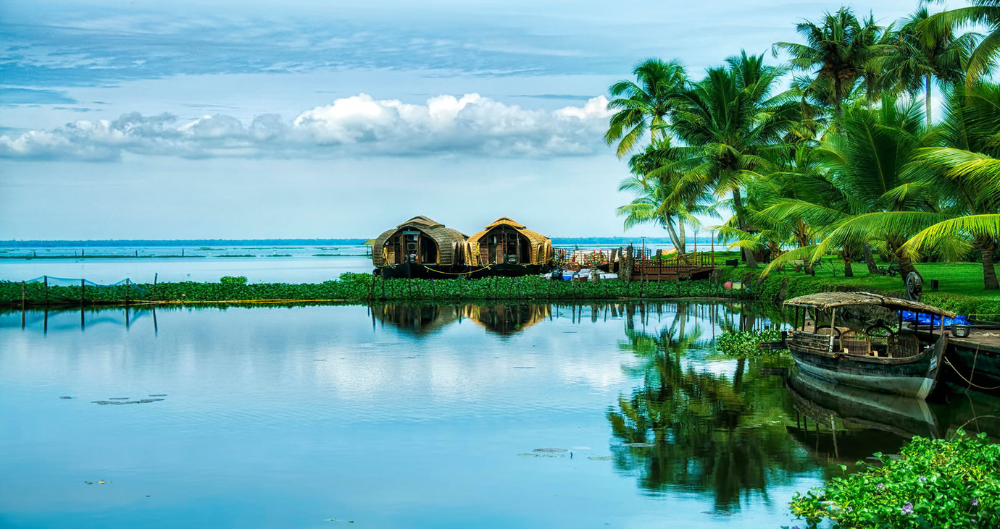
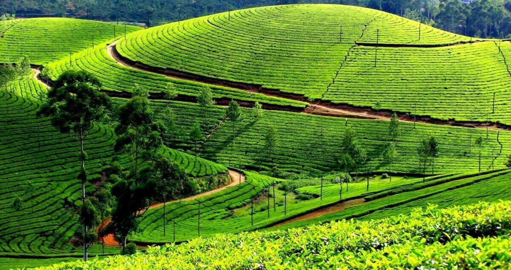
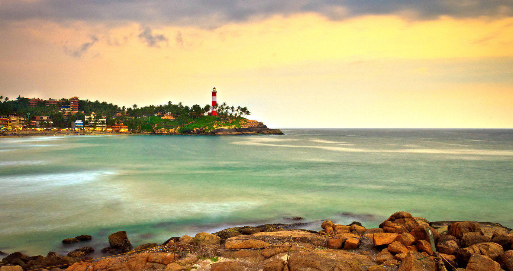
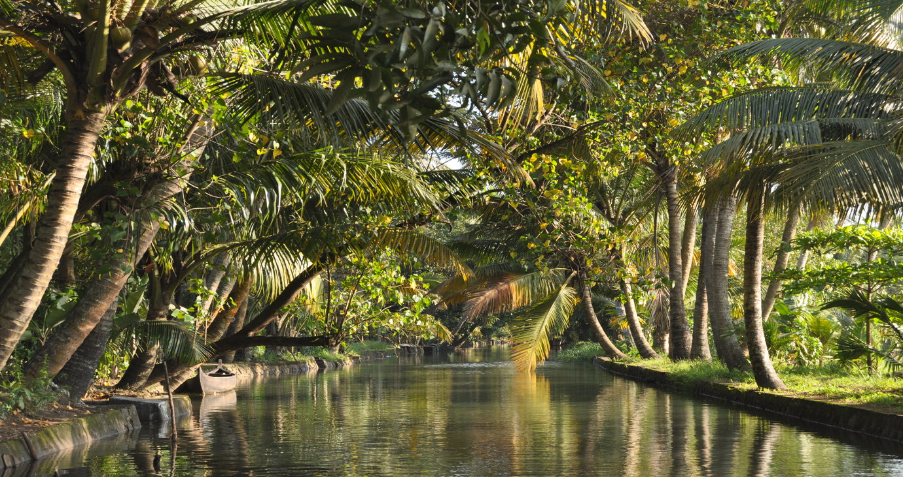
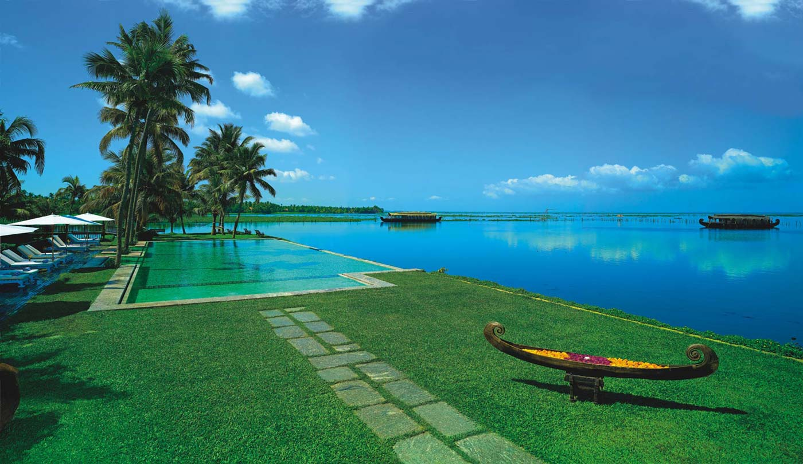
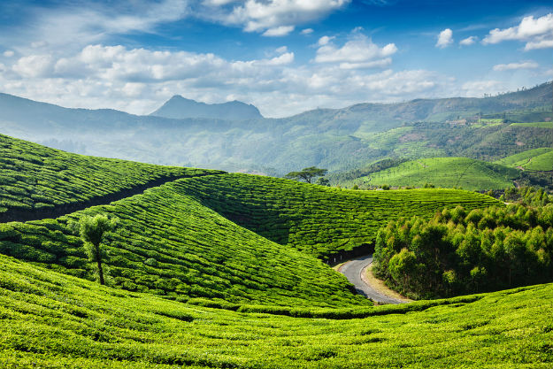
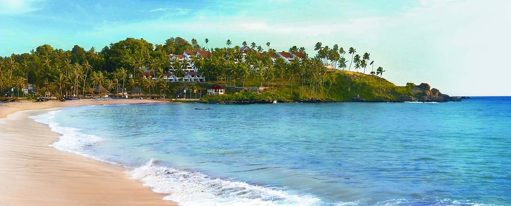
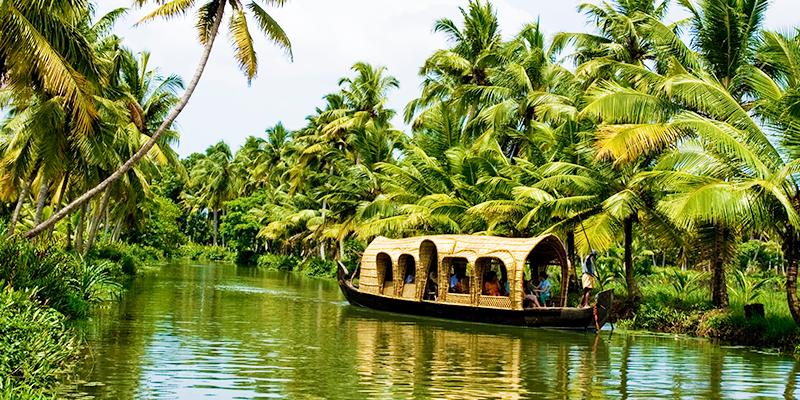

Close ×
Kumarakom
Kumarakom is a popular tourism destination located near the city of Kottayam (16 kilometres), in Kerala, India, famous for its backwater tourism.It is set in the backdrop of the Vembanad Lake, the largest lake in the state of Kerala.

Tourism sightseeing -
Traditional boats moored at a lagoon
Tourism in Kumarakom largely revolves -around the backwaters of the Vembanad Lake. Several luxury and budget resorts lined up on the shores of the lake provide tourists with facilities for boating, yachting and fishing, with
panoramic views of the lake. The other major attraction is the Bird Sanctuary, which is open from 6 am to 6 pm and can be visited by canoes arranged by local fishermen at the entrance to the sanctuary. A two-hour rowing canoe trip is
quite cheap, and is best undertaken in the evening or early morning to avoid the afternoon sun.
Furthermore, the Aruvikkuzhi Waterfall and its surrounding rubber plantation are a photographer's delight. There is also the Bay Island Drift Museum near the Kumarakom beach for history lovers, open from 10 am – 5 pm on Tuesdays –
Saturdays and from 11.30 am – 5 pm on Sundays.
Kumarakom is home to a wide variety of flora and fauna. Kumarakom Bird Sanctuary is a noted bird sanctuary where many species of migratory birds visit. The Vembanad Lake, the largest backwater in Kerala, is habitat for many marine
and freshwater fish species and it teems with Karimeen (Pearl spot also known as Etroplus suratensis) shrimp (Metapenaeus dobsonii) common name Poovalan chemeen. The bird sanctuary extends over 14 acres (57,000 m²), and came into
existence following preservation efforts from the government. It is a major tourist attraction.
Munnar
Munnar (Malayalam: മൂന്നാർ) is a town and hill station located in the Idukki district of the southwestern Indian state of Kerala. Munnar is situated at around 1,600 metres (5,200 ft) above mean sea level, in the Western Ghats range
of mountains.

Location -
Geographic coordinates of Munnar is 10°05′21″N 77°03′35″E. Munnar town is situated on the Kannan Devan Hills village in Devikulam taluk and is the largest panchayat in the Idukki district covering an area of nearly 557 square
kilometres (215 sq mi).[citation needed]
Road
Munnar KSRTC bus stand
Munnar is well connected by both National highways, state highways and rural roads. The town lies in the Kochi - Dhanushkodi National highway (N.H 49), about 130 km (81 mi) from Cochin, 31 km (19 mi) from Adimali, 85 km (53 mi) from
Udumalpettu in Tamil Nadu and 60 km (37 mi) from Neriyamangalam.
Distance from major cities
from Kochi - Ernakulam - 150 km
Railway
The nearest major railway stations are at Ernakulam and Aluva (approximately 140 kilometres (87 mi) by road). The Nearest Functioning Railway station is at Udumalaipettai.
Airport
The nearest airport is Cochin International Airport, which is 110 kilometres (68 mi) away. The Coimbatore and Madurai airports is 165 km from Munnar.
Most of the native flora and fauna of Munnar have disappeared due to severe habitat fragmentation resultant from the creation of the plantations. However, some species continue to survive and thrive in several protected areas nearby,
including the new Kurinjimala Sanctuary to the east, the Chinnar Wildlife Sanctuary, Manjampatti Valley and the Amaravati reserve forest of Indira Gandhi Wildlife Sanctuary to the north east, the Eravikulam National Park and Anamudi
Shola National Park to the north, the Pampadum Shola National Park to the south and the proposed Palani Hills National Park to the east.
Kovalam
Beaches
Kovalam has three beaches separated by rocky outcroppings in its 17 km coastline, the three together form the famous crescent of the Kovalam beach.

Lighthouse Beach
The southernmost beach, the Lighthouse Beach is the one most frequented by tourists, Lighthouse Beach got its name due to the old Vizhinjam Lighthouse located on a 35 meter high on top of the Kurumkal hillock. The lighthouse is built
using stones, is colored in red and white bands and enjoys a height of 118 feet. It's intermittent beams at night render the beach with an unearthly charm.
Hawah Beach
Eve’s Beach, more commonly known as Hawa Beach, ranks second, in the early day, is a beehive of activities with fishermen setting out for sea. With a high rock promontory and a calm bay of blue waters, this beach paradise creates a
unique aquarelle on moonlit nights.
Samudra Beach
A large promontory separates this part from the southern side. Samudra Beach doesn't have tourists thronging there or hectic business. The local fishermen ply their trade on this part.
Detour past Kovalam junction to land on Samudra Beach which is to the north of Ashoka Beach. One has the option to walk along the sea-wall too.The sight of the waves lashing on the rocks below is awesome.
Shallow waters stretching for hundreds of metres are ideal for swimming. The beaches have steep palm covered headlands and are lined with shops that offer all kinds of goods and services.
Evening time view of the beach
The larger of the beaches is called Lighthouse Beach for its 35 metre high light house which towers over it atop Kurumkal hillock. The second largest one is Hawah Beach named thus for the topless European women who used to throng
there. It was the first topless beach in India.[citation needed] However topless bathing is banned now except in private coves owned by resorts. Visitors frequent these two beaches. The northern part of the beach is known as Samudra
Beach in tourism parlance. A large promontory separates this part from the southern side. Samudra Beach doesn't have tourists thronging there or hectic business. The local fishermen ply their trade on this part. The sands on the
beaches in Kovalam are partially black in colour due to the presence of ilmenite and Monazite. The normal tourist season is from September to May. Ashoka beach is also the part of Kovalam beach.
Kerala backwaters

The Kerala backwaters are a chain of brackish lagoons and lakes lying parallel to the Arabian Sea coast (known as the Malabar Coast) of Kerala state in southern India. The network includes five large lakes linked by canals, both man
made and natural, fed by 38 rivers, and extending virtually half the length of Kerala state. The backwaters were formed by the action of waves and shore currents creating low barrier islands across the mouths of the many rivers
flowing down from the Western Ghats range.
The Kerala Backwaters are a network of interconnected canals, rivers, lakes and inlets, a labyrinthine system formed by more than 900 km of waterways, and sometimes compared to the American Bayou.In the midst of this landscape there
are a number of towns and cities, which serve as the starting and end points of backwater cruises.National Waterway 3 from Kollam to Kottapuram, covers a distance of 205 km and runs almost parallel to the coast line of southern
Kerala facilitating both cargo movement and backwater tourism. The important rivers from north to south are the Valapattanam river (110 km.), Chaliar (69 km.), Kadalundipuzha (130 km.), Bharathapuzha (209 km.), Chalakudy river (130
km.), Periyar (244 km), Pamba (176 km), Achancoil (128 km.) and Kalladayar (121 km.). Other than these, there are 35 more small rivers and rivulets flowing down from the Ghats. Most of these rivers are navigable up to the midland
region, in country crafts.
Vembanad is the largest of the lakes, covering an area of 2033 km². The lake has a large network of canals that meander through the region of Kuttanad.
The backwaters have a unique ecosystem: freshwater from the rivers meets the seawater from the Arabian Sea. A barrage has been built near Thanneermukkom, so salt water from the sea is prevented from entering the deep inside, keeping
the fresh water intact. Such fresh water is extensively used for irrigation purposes.
Many unique species of aquatic life including crabs, frogs and mudskippers, water birds such as terns, kingfishers, darters and cormorants, and animals such as otters and turtles live in and alongside the backwaters. Palm trees,
pandanus shrubs, various leafy plants and bushes grow alongside the backwaters, providing a green hue to the surrounding landscape.